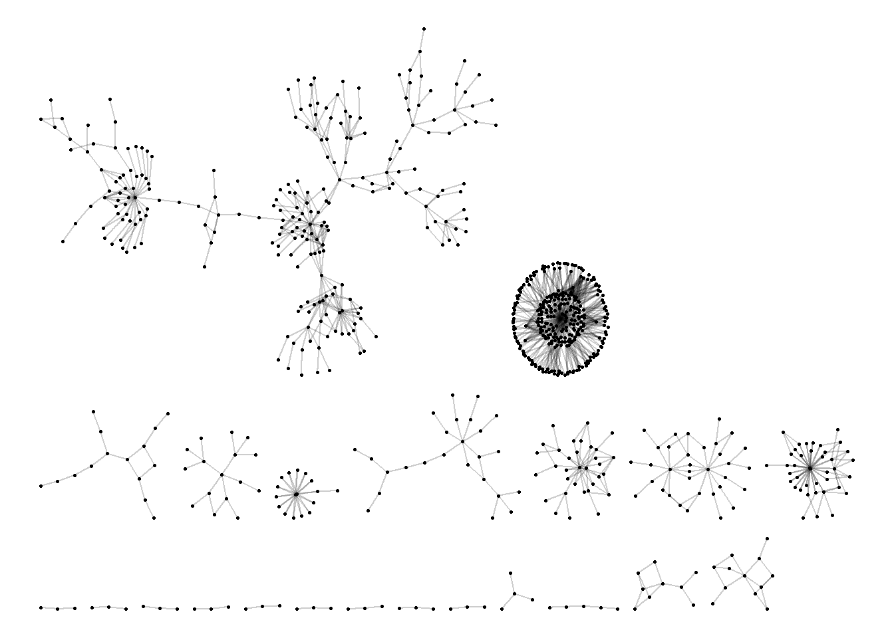
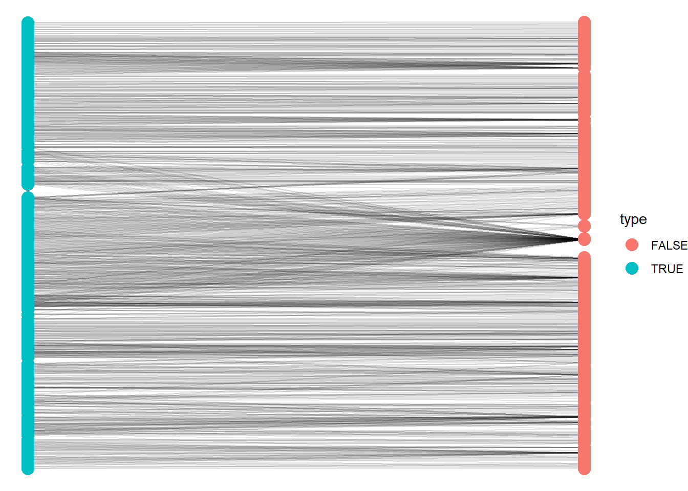
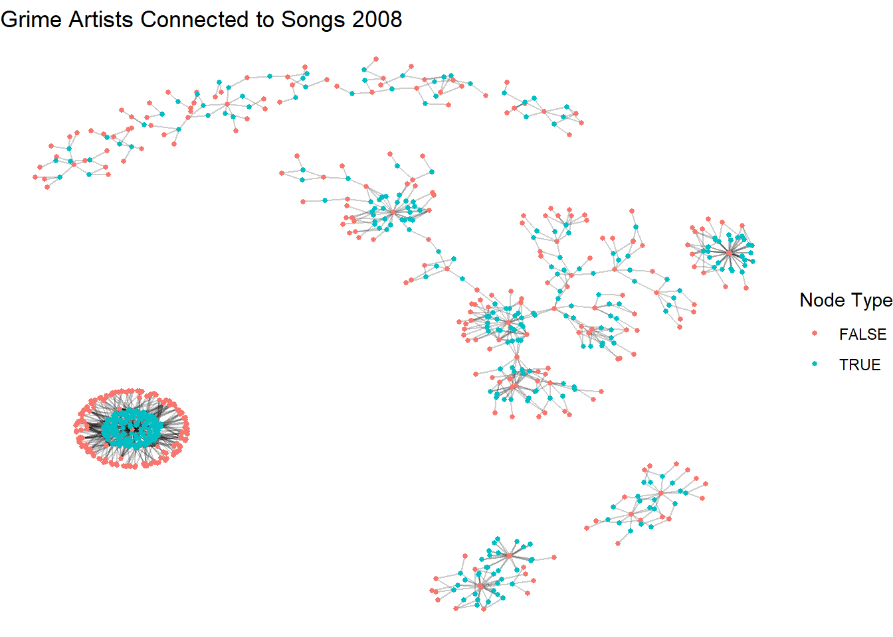
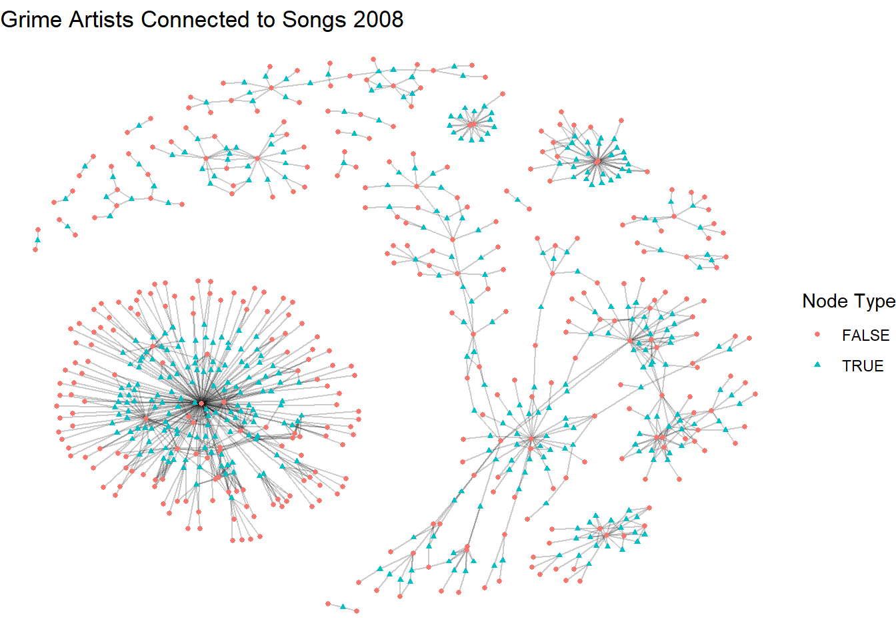
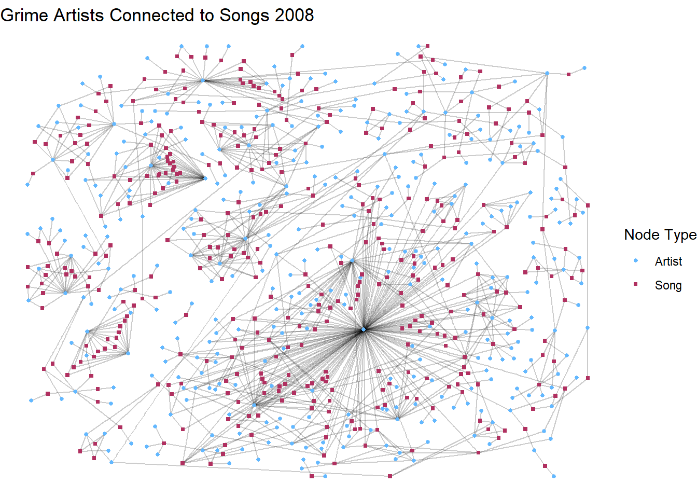
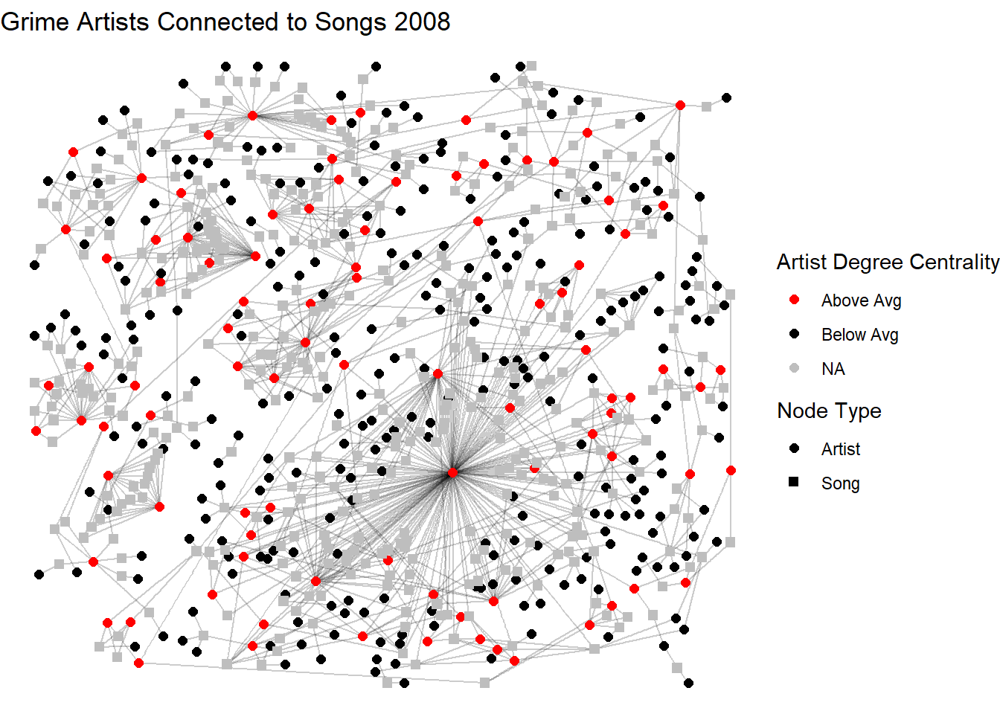
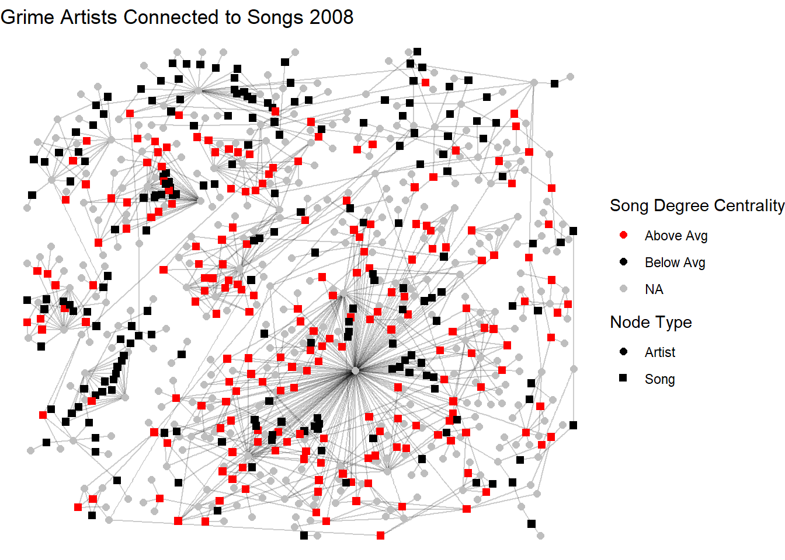
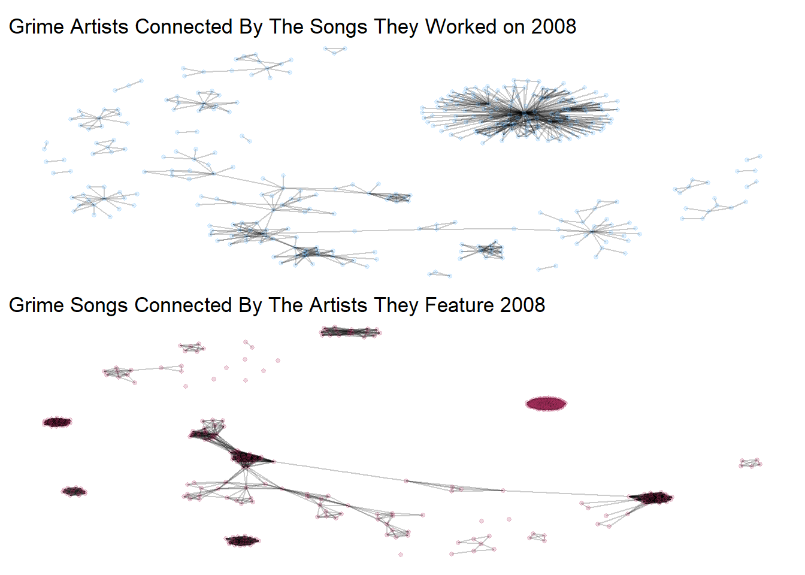

library(igraph)
library(ggraph)
library(intronets)
library(tidyverse)
# reading data in
load_nets("grime.rda")13 Two Mode Network Data
This chapter introduces you to a slightly different form of network analysis - two mode networks. So far in our learning we have focused on networks with one type of thing connected with others of the same type. Individuals connected to individuals, for example. However, it is possible that one type of thing is connected to that of another type. Individuals may belong to groups, they might subscribe to channels etc. Outside of social networks, words may belong to books, countries may belong to treaties and more. The two mode nature allows you to account for the characteristics of both node types.
Ties in two mode networks are tend to be defined by connections of affiliation. Similar tools of analysis are available for two mode network analysis as those we have covered so far only with some slight alterations to account for the two mode nature. Note, ties within a two mode network must be exclusive. By this, we mean that in order for it to truly be a two mode network, ties within mode must not exist, only across mode (e.g. from people to groups, not people to people or group to group).
To illustrate this we are going to use a network where artists are connected to the songs they have worked on. Rather than direct artist-to-artist collaboration networks, this network considers artists connected to the songs they create treating songs as an artifact with characteristics separate of the artists. Likewise, the artists have characteristics separate of the songs they work on.
Let’s get the data in an take a look.
Like working with one mode networks, two mode data can be stored as either an edgelist or a matrix. There are some suble differences, however, in how they are stored and some major differences in how you convert them into network objects.
In an edgelist, there are not “to” and “from” columns per se. Rather, one set of nodes is in one column and the second in a separate column. Rows still represent connections. These columns must be mutually exclusive. In other words, they must reflect the separate modes. In this case, we have artists (and only artists) in one column and the name of the songs they appeared on (and only those songs) in the second column.
head(artist_track_edge)# A tibble: 6 × 2
artist track_name
<chr> <chr>
1 Wiley See Clear Now (feat. Kano & Scorcher)
2 Kano See Clear Now (feat. Kano & Scorcher)
3 Scorcher See Clear Now (feat. Kano & Scorcher)
4 Wiley Cash in My Pocket (feat. Daniel Merriweather)
5 Daniel Merriweather Cash in My Pocket (feat. Daniel Merriweather)
6 Wiley 5AM (feat. Scorcher) Next, our matrix looks a bit different. This is called an affiliation matrix (a.k.a a two mode matrix). In this, the rows are one mode and the columns are the second mode. In our case, artists are in rows and columns are the songs. Just like traditional adjacency matrices, the 1/0 reflect tie/no tie.
glimpse(artist_track_adj) num [1:372, 1:391] 1 1 1 0 0 0 0 0 0 0 ...
- attr(*, "dimnames")=List of 2
..$ : chr [1:372] "Wiley" "Kano" "Scorcher" "Daniel Merriweather" ...
..$ : chr [1:391] "See Clear Now (feat. Kano & Scorcher)" "Cash in My Pocket (feat. Daniel Merriweather)" "5AM (feat. Scorcher)" "Step by Step (feat. Hot Chip)" ...Now, let’s work on converting these datasets into graphs that we can work with.
13.1 Two Mode Networks From Edgelists
When converting edgelists into graph objects, you use the graph_from_data_frame() function with a few more steps. Notice below that we use our edgelist data and set directed to false. Now, when we look at the summary of the object, we see that we have an undriected network (UN) with 763 nodes and 1143 edges. At this point, R does not recognise this as a two mode network. There is another step we must do.
a_t_g <- graph_from_data_frame(artist_track_edge, directed = F)
a_t_gIGRAPH ce0493c UN-- 763 1143 --
+ attr: name (v/c)
+ edges from ce0493c (vertex names):
[1] Wiley --See Clear Now (feat. Kano & Scorcher)
[2] Kano --See Clear Now (feat. Kano & Scorcher)
[3] Scorcher --See Clear Now (feat. Kano & Scorcher)
[4] Wiley --Cash in My Pocket (feat. Daniel Merriweather)
[5] Daniel Merriweather--Cash in My Pocket (feat. Daniel Merriweather)
[6] Wiley --5AM (feat. Scorcher)
[7] Scorcher --5AM (feat. Scorcher)
[8] Wiley --Step by Step (feat. Hot Chip)
+ ... omitted several edgesBelow, we use the bipartite_mapping() function which basically scans your network object to determine whether there it is truly a two mode network. It generates an attribute called “type” which is a logic vector of TRUE and FALSE statements. We set that as a node level characteristic in our network. Those with a type == FALSE are one mode (in our case the artists) and TRUE are the second mode (the songs).
V(a_t_g)$type <- bipartite_mapping(a_t_g)$type
unique(V(a_t_g)$type) # Check if it worked[1] FALSE TRUENow when we look at the network we see that it is now a UN-B which means undirected bipartite graph. We also see that the type has been added as a logical vertex characteristic.
a_t_gIGRAPH ce0493c UN-B 763 1143 --
+ attr: name (v/c), type (v/l)
+ edges from ce0493c (vertex names):
[1] Wiley --See Clear Now (feat. Kano & Scorcher)
[2] Kano --See Clear Now (feat. Kano & Scorcher)
[3] Scorcher --See Clear Now (feat. Kano & Scorcher)
[4] Wiley --Cash in My Pocket (feat. Daniel Merriweather)
[5] Daniel Merriweather--Cash in My Pocket (feat. Daniel Merriweather)
[6] Wiley --5AM (feat. Scorcher)
[7] Scorcher --5AM (feat. Scorcher)
[8] Wiley --Step by Step (feat. Hot Chip)
+ ... omitted several edgesNice one! Before we go any further, lets cover affiliation matrices.
13.2 Two Mode Networks From Adjacency Matrices
When creating networks from affiliation matrices we use the graph_from_biadjacency_matrix() function. This is a slight permutation of the graph_from_adjacency_matrix() function we’ve used till now.
a_t_g2 <- graph_from_biadjacency_matrix(artist_track_adj)
unique(V(a_t_g2)$type)[1] FALSE TRUEThe graph_from_adjacency_matrix() automatically generates the type attribute and creates a bipartite network object for you.
Now we are ready to get going with visualising and analysing this network!
13.3 Visualising Two Mode Networks
We will start with some basic visualisation of this network. In the chunk below, we encounter the pitfall that is common when working with two mode network data. Even though R knows this is a two mode network, the visualisation does not show that there is a difference between the nodes. So, we need to do a few things to make it work!
ggraph(a_t_g2, layout = "stress") +
geom_edge_link(alpha = 0.2) +
geom_node_point(size = 0.5) +
theme_void()
One method that is commonly used is called the bipartite layout. This layout pushes one type of node to one side of the visual and the second to the oposite. We demonstrate a top and bottom version and a left and right version here (using the coord_flip option). Note that we have also set the color to the mode type with one color for the artists and another for the songs.
ggraph(a_t_g2, layout = "bipartite") +
geom_edge_link(alpha = 0.1) +
geom_node_point(aes(color = type), size = 4) +
theme_void()
ggraph(a_t_g2, layout = "bipartite") +
geom_edge_link(alpha = 0.1) +
geom_node_point(aes(color = type), size = 4) +
coord_flip() +
theme_void()
The bipartite visualisations are a classic format. However, you lose the visual cues to the nature of the structure of the network by forcing them into vertical/horizontal ties. Below, we go through a few of our force-directed algorithms and adding a few more options to further clarify the two mode nature of the network.
set.seed(123)
ggraph(a_t_g2, layout = "kk") +
geom_edge_link(alpha = 0.2) +
geom_node_point(aes(color = type), size = 1) +
labs(title = "Grime Artists Connected to Songs 2008",
color = "Node Type") +
theme_void()
In this next chunk we swap layouts but add shapes to further clarify the two modes. This is particularly important for accessibility since folk may not be able to see color well.
set.seed(123)
ggraph(a_t_g2, layout = "fr") +
geom_edge_link(alpha = 0.2) +
geom_node_point(aes(shape = type, color = type), size = 1) +
labs(title = "Grime Artists Connected to Songs 2008",
color = "Node Type", shape = "Node Type") +
theme_void()
In this last layout, we also clean up the legend a bit. Don’t get too overwhelmed with the code since it is quite long. Take it line-by-line and see if you can work out what we are doing.
V(a_t_g2)$mode <- ifelse(V(a_t_g2)$type, "Song", "Artist")
set.seed(123)
ggraph(a_t_g2, layout = "dh") +
geom_edge_link(alpha = 0.2) +
geom_node_point(
aes(shape = mode, color = mode),
size = 1
) +
scale_shape_manual(
name = "Node Type",
values = c("Artist" = 16, "Song" = 15)
) +
scale_color_manual(
name = "Node Type",
values = c("Artist" = "steelblue1", "Song" = "maroon")
) +
labs(title = "Grime Artists Connected to Songs 2008") +
theme_void()
After the standard options, we go through a series of scale_ options. If you set the shape scale as the mode and the color to another characterstic, it would generate two legends. However, since we set them both to the mode it collapses into one showing both the shape and color to reflect artist and song.
Nice work!!
Now let’s turn to some analysis. We have already learned about different measures of centrality, so we won’t go too much into detail here. However, the main thing you must remember when working with centrality in two mode data is that your interpretation of the measures needs to reflect the two mode nature. For the sake of parsimony, we are going to cover degree centrality and betweenness centrality in two mode networks. For more information on how to interpret other forms of centrality or other network measures, see Borgatti and Everett’s (1997) paper on two mode network analysis.
To get going, we are going to make a quick data frame that captures both the degree and betweenness centrality measures. We are also going to include the name of each node and an indicator as to whether the node is an artist or a song. This is going to come in handy when we are talking about these measures.
centrality <- data.frame(
degree = degree(a_t_g2),
between = betweenness(a_t_g2),
name = V(a_t_g2)$name,
type = ifelse(V(a_t_g2)$type == TRUE, "Song", "Artist")
)13.4 Degree Centrality in Two Mode Networks
Borgatti & Everett (1997) demonstrate that the logic of degree centrality remains the same from one mode to two mode analysis. The degree centrality simply counts the number of neighbours that a node has. The important thing to remember, however, is that counting the number of neighbours in a one mode network is usually interpreted as a measure of an indivdual’s prominence in the network. The maximum degree in a one mode network is n-1. When applied to a two mode network, this alters slightly depending on which mode you are measuring. The maximal degree for each mode is the N of the opposite mode.
If you are measuring the degree centrality of the individual artists in this network, then what you are actually capturing is the number of songs they are on in 2008.Their maximal degree is the n(songs). While we could still think of this as how prominent an artist is within the world of Grime, it is more appropriate to think of this as a measure of how expansive they are within this two mode world. The chunk below filters the dataframe we created to focus only on the artists and calculates a brief summary of the their degree centrality.
centrality %>%
filter(type == "Artist") %>%
summarize(mean(degree),
min = min(degree),
max = max(degree),
sd = sd(degree),
n = n()
) mean(degree) min max sd n
1 3.072581 1 146 8.513671 372From this, we can infer that the average Grime artist from our set appeared on 3 songs in 2008. However, we can also see from the max and standard deviation that there is massive variance among these artists’ expansiveness in terms of their affiliation to songs. One final thing to note is that the maximum observed degree is much less than the number of possible degree centrality (n songs = 391). This suggests that, while some Grime artists are very expansive (appearing on 146 songs in one year!), there are many more songs than there are expansive individuals.
This visualisation below demonstrates the artists with a degree equal to or higher than the average in red while those with below average are black. We do this by adding a vertex characteristic to our graph only for the artists (type = FALSE, songs are set to NA). Songs are left grey.
V(a_t_g2)$artist_degree_group <- NA
V(a_t_g2)$artist_degree_group[V(a_t_g2)$type == FALSE] <-
ifelse(degree(a_t_g2, v = V(a_t_g2)[V(a_t_g2)$type == FALSE]) >= 3,
"Above Avg", "Below Avg")
set.seed(123)
ggraph(a_t_g2, layout = "dh") +
geom_edge_link(alpha = 0.2) +
geom_node_point(aes(shape = mode, color = artist_degree_group), size = 2) +
scale_shape_manual(
name = "Node Type",
values = c("Artist" = 16, "Song" = 15)
) +
scale_color_manual(
name = "Artist Degree Centrality",
values = c("Above Avg" = "red", "Below Avg" = "black"),
na.value = "grey"
) +
labs(title = "Grime Artists Connected to Songs 2008") +
theme_void()
If you are measuring the degree centrality of the second mode, in this case the songs, you are measuring the number of artists that were on each song. As above, the chunk below does the same for songs so that we can compare each.
centrality %>%
filter(type == "Song") %>%
summarize(mean(degree),
min = min(degree),
max = max(degree),
sd = sd(degree),
n = n()
) mean(degree) min max sd n
1 2.923274 2 9 1.298617 391Here, the average song had roughly 3 artists featured. Standard deviation suggests that there is some variation in this across artists but the observed maximum is much lower than the possible degree (n artists = 372). In this case, it makes sense. Having almost 400 artists on a song might be hard to listen to. Or a very long song! The visualisation below repeats the aesthetic as above only now showing songs (tpye = TRUE) with a degree above the average.
V(a_t_g2)$song_degree_group <- NA
V(a_t_g2)$song_degree_group[V(a_t_g2)$type == TRUE] <-
ifelse(degree(a_t_g2, v = V(a_t_g2)[V(a_t_g2)$type == TRUE]) >= 3,
"Above Avg", "Below Avg")
set.seed(123)
ggraph(a_t_g2, layout = "dh") +
geom_edge_link(alpha = 0.2) +
geom_node_point(aes(shape = mode, color = song_degree_group), size = 2) +
scale_shape_manual(
name = "Node Type",
values = c("Artist" = 16, "Song" = 15)
) +
scale_color_manual(
name = "Song Degree Centrality",
values = c("Above Avg" = "red", "Below Avg" = "black"),
na.value = "grey"
) +
labs(title = "Grime Artists Connected to Songs 2008") +
theme_void()
In summary, in two mode networks, think about the degree centrality of an individual as a measure of expansiveness within the observed world and the degree of an event as a measure of its popularity (counting the attendees).
13.5 Betweenness Centrality in Two Mode Networks
The behind betweenness centrality being considered a measure of influence or bridging remains true in two mode networks, but the paths look a little different. In a one mode network the shortest pathways are calculated person-to-person and betweenness calculates the number of times each node appears on that path (known as the geodesic). However, such pathways do not exist in two mode networks. Since ties can only exist across the modes (person/group ties, not person/person or group/group), the pathways become person-to-group-to-person. As a result, a node’s betweenness in a two-mode network reflects how much it connects otherwise separate parts of the network across the two modes—for example, how an individual links otherwise disconnected groups, or how a group brings together otherwise unconnected individuals. While the measure is calculated in the same way as in one-mode networks, its interpretation emphasizes cross-mode brokerage rather than direct influence among nodes of the same type.
centrality %>%
filter(type == "Artist") %>%
summarize(mean(between),
min = min(between),
max = max(between),
sd = sd(between),
n = n()
) mean(between) min max sd n
1 441.871 0 38560.67 2701.778 372Remember that this measure captures how much an artist bridges across otherwise disconnected parts of the track–artist structure. This distribution tells a lot about artist bridging across this network! The mean is 442 with a max of over 38,000 and a huge standard deviation. This tells us that most artists have very low betweenness, while a small number act as major bridges in the network. Those with a betweenness score of 0 are embedded in small or redundant parts of the network. Those with higher levels of betweenness are key brokers across the space since they connect otherwise separate parts of the network.
Now let’s turn to the song-level betweenness to examine how often a song lies on the shortest paths between pairs of artists in the network.
centrality %>%
filter(type == "Song") %>%
summarize(mean(between),
min = min(between),
max = max(between),
sd = sd(between),
n = n()
) mean(between) min max sd n
1 415.8133 0.03846154 11454 1311.739 391The distribution of song betweenness tells a similar story. The mean (416) relative to the max (11454) shows that there are some songs that are highly bridging while others are in more redundant parts of the network. Songs with high betweenness are those that connect otherwise disconnected clusters. Since songs are not agentic, we don’t really think of these as brokers, but really as meeting points or shared contexts.
13.6 Projecting One Mode Networks
One of the classic applications of two mode network analysis is to project a one mode network for both sets. In our case, this involves constructing an artist-to-artist network and a song-to-song network. The ties in the artist one mode network represent mutual appearances on songs. The ties are weighted by the total number of songs they co-appear on. Conversely, the ties in the song-to-song network reflect whether they share artists. Again, these ties are weighted, but, this time, the weights are the number of artists they share.
This conversion process is useful to see the visualise the ways that individuals and groups are connected to each other. The converted one mode networks reveal some interesting structures based on shared affiliation (for the person-to-person network) or shared affiliates (for the group-to-group network). Such dual connectivity based on affiliation (person-to-group and then the subsequent one mode permutations of those) is a major component of what Breiger (1974) called “the duality of persons and groups.”
To project these one mode networks, we simply use the bipartite_projection() function. Before we use it, let’s understant it. The output from the chunk below shows that the function produces a list with two network objects. The first (proj1) shows an undirected, weighted network with our 372 artists. This network has 852 edges between these nodes (the songs they share) and three attributes, the node name, its mode, and the edge weight. The second (proj2) is another undirected network of our 392 songs with the same list of attributes.
bipartite_projection(a_t_g2)$proj1
IGRAPH 1c18bcc UNW- 372 852 --
+ attr: name (v/c), mode (v/c), artist_degree_group (v/c),
| song_degree_group (v/c), weight (e/n)
+ edges from 1c18bcc (vertex names):
[1] Wiley--Kano Wiley--Scorcher
[3] Wiley--Daniel Merriweather Wiley--Hot Chip
[5] Wiley--Peter Raeburn Wiley--Larry
[7] Wiley--Rossi B & Luca Wiley--DVA
[9] Wiley--Flo-Dan Wiley--Riko
[11] Wiley--Mos Wanted Wiley--Young Dot
[13] Wiley--Bless Beats Wiley--Stickman
+ ... omitted several edges
$proj2
IGRAPH 1c18c57 UNW- 391 12312 --
+ attr: name (v/c), mode (v/c), artist_degree_group (v/c),
| song_degree_group (v/c), weight (e/n)
+ edges from 1c18c57 (vertex names):
[1] See Clear Now (feat. Kano & Scorcher)--Cash in My Pocket (feat. Daniel Merriweather)
[2] See Clear Now (feat. Kano & Scorcher)--5AM (feat. Scorcher)
[3] See Clear Now (feat. Kano & Scorcher)--Step by Step (feat. Hot Chip)
[4] See Clear Now (feat. Kano & Scorcher)--I Am the Sea (feat. Peter Raeburn)
[5] See Clear Now (feat. Kano & Scorcher)--Pay Up What You Owe
[6] See Clear Now (feat. Kano & Scorcher)--Music Money
+ ... omitted several edgesNow, we can create an object with this which will give us our projected networks that we can now plot and analyse individually. See below for examples.
library(patchwork) # so we can do a side by side
projections <- bipartite_projection(a_t_g2)
set.seed(123)
p1 <- ggraph(projections$proj1, layout = "fr") +
geom_edge_link(alpha = 0.2) +
geom_node_point(size = 1, alpha = 0.2, color = "steelblue1") +
labs(title = "Grime Artists Connected By The Songs They Worked on 2008") +
theme_void()
set.seed(123)
p2 <- ggraph(projections$proj2, layout = "fr") +
geom_edge_link(alpha = 0.2) +
geom_node_point(size = 1, alpha = 0.2, color = "maroon") +
labs(title = "Grime Songs Connected By The Artists They Feature 2008") +
theme_void()
# plot together
p1 / p2
From these networks, we can tell slightly different stories about artists and the songs they create. From the first, the artist only network, there appears to be a dense group of artists separate from others with small communities surrounding them. This may generate interesting questions for your research. Are these reflective of seperate sub-genres of the genre? From the second visual, we see that the main component of the graph is a long tree-like structure of songs connected through a few that appear to connect groups of other songs. This is fascinating! Think about the implications of this? What songs are connecting these big groups through artistic collabroation? Some fun stories could emerge from this!
In sum, the projection of two mode to a one mode network is a useful tool. Beware, however, that taking measures like degree or betweenness from these networks won’t mirror those from the two mode network. This is because you have removed the two-mode structure. This is a continuing debate among scholars (Everett & Borgatti 2012). Suffice it to say that it is one of the most unique and fun elements of working with two mode networks!
13.7 References
For more on analyzing two mode networks…
- Borgatti, S. P., & Everett, M. G. (1997). Network analysis of 2-mode data. Social Networks, 19(3), 243–269. https://doi.org/10.1016/S0378-8733(96)00301-2
- Breiger, Ronald L. 1974. “The Duality of Persons and Groups.” Social Forces 53(2):181–90. doi:10.2307/2576011.
- Everett, M. G., and S. P. Borgatti. 2013. “The Dual-Projection Approach for Two-Mode Networks.” Social Networks 35(2):204–10. doi:10.1016/j.socnet.2012.05.004.